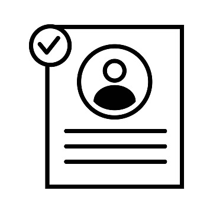
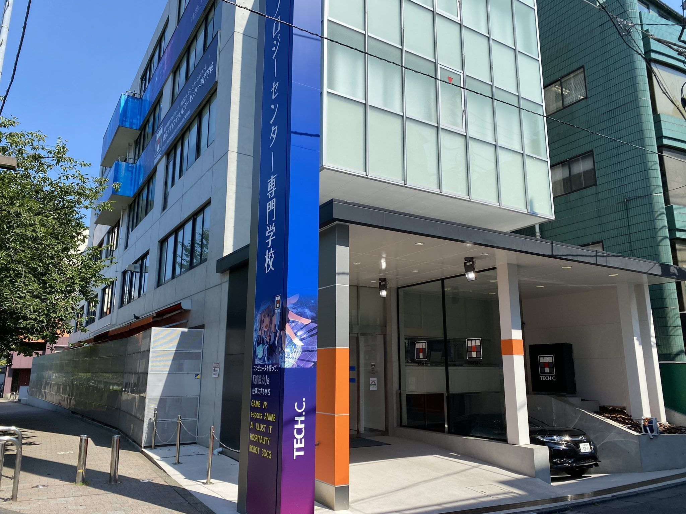
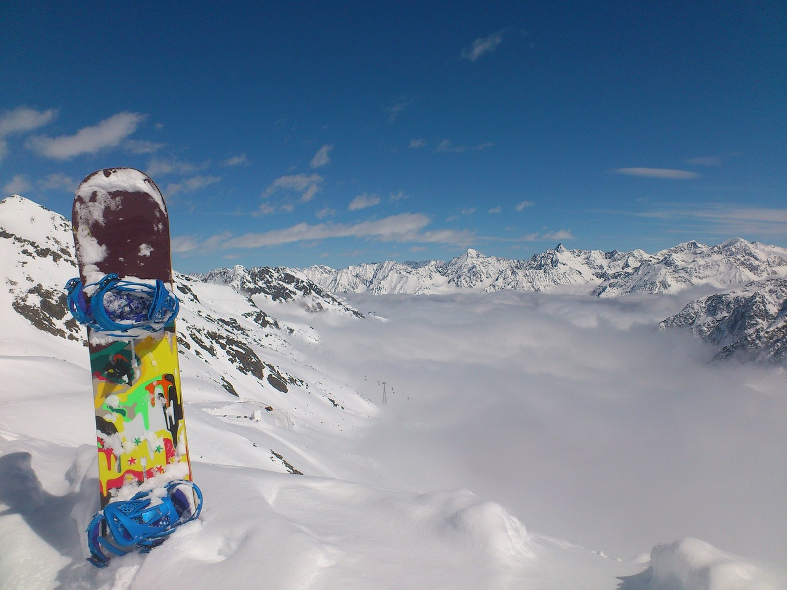

profile自己紹介
木塚 健太
2003年埼玉県出身。高校を卒業後、IT系の専門学校へ入学。
HTML / CSS / JavaScriptなどのWeb系の言語や
Photoshop / IllustratorなどのAdobeのツールを用いてデザインを勉強中。
↓画像は私の通学している専門学校です。
Hobby（趣味）
- 音楽
- 邦楽HIPHOPやK-POP、洋楽など幅広い音楽を聴きます。
最近はベースを友達から借り練習をしたり、パソコンで曲を作ってみたり
色々なことに挑戦しています。
⇗よく聴いているアーティスト秋山黄色さんです。
- スノーボード
- 小学生のころからスキーに行っていたのでウィンタースポーツが好きで
中学2年生の時に初めてスノーボードをしてからさらにハマりました。
来年から1年間カナダに住むので飽きるまでスノーボードしたいです。

Skill技術
Coding
| HTML | ★★★★☆ | 主に使うタグは覚えているのですがあまり使わないタグなどはまだ勉強中です。 |
|---|---|---|
| CSS | ★★★★☆ | HTMLと同様主に使うタグは覚えていますが応用が入ったり複雑なものになるとまだ自信がありません。 |
| JavaScript | ★★☆☆☆ | jsはHTML,cssと比べるとまだまだ覚えなければいけない事が多く、あまり自信がないのでこれからも勉強していきたいと思います。 |
Adobe
| Adobe Photoshop | ★★★★★ | 授業でやっていたということもあり自分なりに工夫しながら作品を作ることができるのですが、まだまだ知らない事が沢山あるので自分らしい工夫をこれからも勉強していきたいです。 |
|---|---|---|
| Adobe Illustrator | ★★★☆☆ | ある程度勉強し出来るようになったのですが、まだ教科書見ながらでないと不安なところもあるので、今後も勉強していきたいです。 |
Office 365
| Word | ★★★☆☆ | 授業の課題で使うので基本的な操作はできるのですがそれ以外何ができるのかあまり分からなくまだまだ勉強が必要と感じます。 |
|---|---|---|
| Excel | ★★★★☆ | 1年の時授業でやっていたので基礎的な操作やちょっとした応用、綺麗にまとめる程度は出来るのですが、使ったことのない関数やグラフ等を使って綺麗にまとめる事がまだうまくできないのでこれからも勉強していきます。 |
| PowerPoint | ★★★★★ | Wordと同様で授業の課題に使ったり発表などの提出物等に使うのでこの2年間で最も出来るようになったソフトです。ですがまだまだ色の使い方や配置等の工夫が出来ていないと感じるのでその部分を学んでいきたいと思います。 |